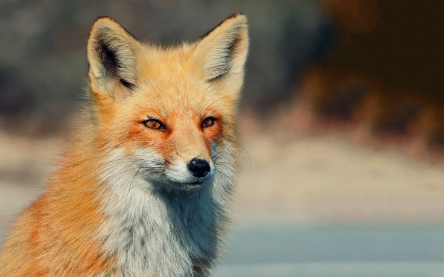

Fox
Newborn cubs wiegh 100 grams, each are blind and deaf, and can't walk. Their mother must stay with them, their father brings food back for her to eat.
- Offspring: Fox babies are called pups
- Size: 9 inches (23 cm) to 34 inches (86 cm)
- Habitat: Forested areas, mountains and deserts
- Diet: Foxes are omnivoress
Their pupils are vertical, similar to a cat, helping them to see well at night. The tip of a red fox’s tail is white, whereas swift foxes have a black-tipped tail